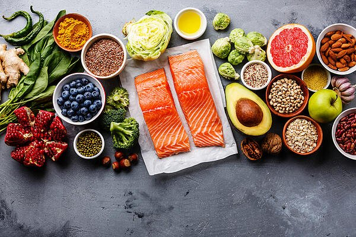

Do you ever find it difficult to determine if your favorite foods are actually healthy for you?
Take a look below as we explore ‘healthy foods’ and provide some insight into whether the foods in your diet
are providing you with the nutrients you need.
Sudipta Chakraborty, Kolkata
Published: 27 September, 2021
What is Considered “Healthy Food”?
While eating fads come and go, there are a few key elements to healthy eating that remain unchanged.
Here is what we know:
"Healthy Food” Defined
Healthy foods are those that provide you with the nutrients you need to sustain your body’s well-being and
retain energy. Water, carbohydrates, fat, protein, vitamins, and minerals are the key nutrients that make up
a healthy, balanced diet.
Unfortunately, the food industry doesn’t make as much of a profit on fresh foods; processed foods are where
the money's at. Even big food companies have lobbied aggressively against public health plans - such as a
campaign ordering the removal of junk food from schools.
These junk food items, processed from crops such as corn, wheat, and soybeans, are high in calories (fillers)
and lack the nutritional value your body needs. However, because they are derived from crops, it can be
difficult to know if they are healthy or not, and misleading claims on labels only make things worse.
How to Read Food Labels
One of the most critical parts of reading your food labels is to look at the serving size; 160 calories may
not seem like much, but that could be for only two little cookies. Continue reading for other factors to
keep in mind when grocery shopping for your healthy foods.
Saying “zero trans fat”, “all natural”, or “contains whole wheat” can trick you into thinking the product is
healthy, even when its nutritional value has been stripped away after being processed.
Alternatively, many packaged products are packed with salt, sugar, and saturated fat. In other words, these
claims make you forget about the added calories. Here is a list of what you should know before you read your
food’s nutritional facts:

- Sugar: Women should try to limit their sugar intake to 25 g / day or 6 teaspoons
- Fat: There are about 9 calories per gram of fat - stick to about 50 g / day
- Sodium: Women should not consume more than 1,500 mg or 3.8 g of salt / day
- Protein: Women exercising less than 30 min / day should eat about 46 g of protein / day
- Vitamins: Naturally occurring vitamins are ideal, but added vitamins can be helpful too
- Calories: The average amount for women is 2,000 / day and 1,500 / day to lose weight
based on a 150 lb. woman
What Should Women Eat to Stay Healthy?
A healthy eating plan is one that encompasses all of the nutrients your body needs on a daily basis without
any non-nutritional additives.
A healthy, balanced diet includes:
- Vegetables and any subgroup such as beans, peas, starches, and those that are dark green, red or orange
in color
- Whole fruits
- Whole grains such as quinoa, corn, millet, and brown rice
- Limited full-fat dairy
- A variety of protein such as lean meats, eggs, nuts, seeds, and soy products
- Oils such as olive, flaxseed, canola, and avocado
When consuming grains, it’s encouraged to only eat whole grains that include the entire grain kernel, bran,
and germ. If you are eating refined grains (or processed grains), the bran and germ have been removed which
takes out the iron, dietary fiber, and other key nutrients.